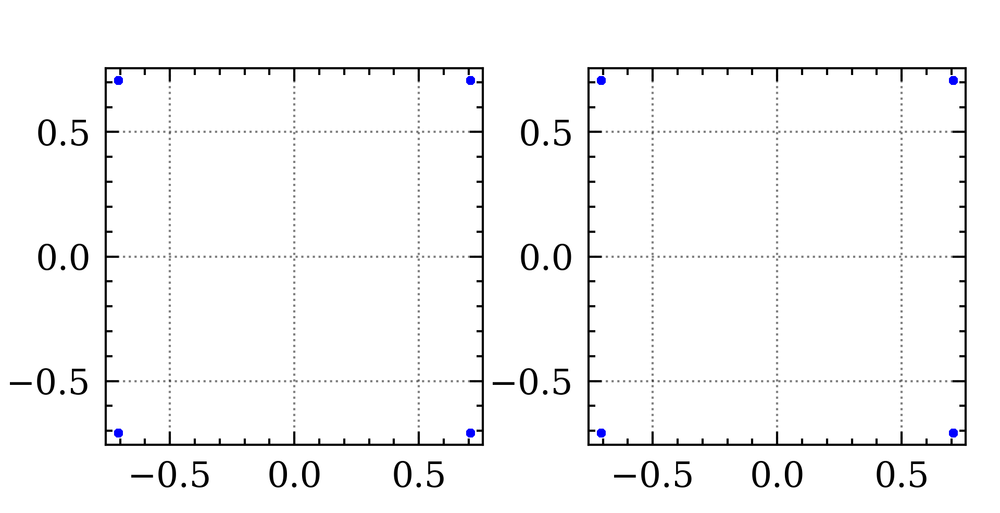

The dir structure
- core
- channel
- device_manger
- filter
- tranciever
- utilities

-
core: Signal.py
- Signal
- QamSignal
- WdmSignal
-
channel
- Fiber.py
- EDFA.py
- ROADM.py
- device_manager: CUDA management
-
tranciever:
- DSP.py
- instruments.py
- Filter: implement some filter function
Signal 类的基本方法和函数签名
class Signal:
def __init__(self,samples,center_freq,sps=2,device='cpu'):
'''
param: samples[nd-array]
center-freq[float]
sps[float]
device[str] cpu, cuda:0,cuda:1
'''
def make_sure_2d(self)->None:
'''
make sure the ndim of self.samples is 2
'''
def cuda(self, device)-> self:
'''
Transfer data to cuda
'''
def cpu(self, device)->self:
'''
Transfer data to cpu
'''
def to(self, device)->self:
'''
Transfer data to specified device cpu.cuda:0,cuda:1
'''
@property
def dtype(self):
return self.samples.dtype
def normalize(self)->self:
'''
normalize the signal power of each row to 1
'''
def __getitem__(self, item)->ndarray:
'''
make the obj support index and slice
'''
def __setitem__(self, key, value):
'''
support the obj[k] = 4
'''
def power(self, veborse=True):
'''
return the total power in w
'''
@property
def shape(self):
return self.samples.shape
def float(self)->self:
'''
convert complex128 to complex64
'''
@property
def fs(self):
return self.symbol_rate * self.sps
@property
def real(self):
return self.samples.real
@property
def imag(self):
return self.samples.imag
Next: QamSignal
QamSignal 的方法和函数签名
class QamSignal:
def __init__(self,
signal_setting: SignalSetting,
samples=None,
symbol=None
):
'''
Function: Create a QamSignal
Params:
signal_setting:Provide the parameters of signal,see the example please
samples = None; The samples, if read from files, it should be set to the practical value
symbol = None: The same with samples
if samples or symbol is None, the signal_setting.is_init should be true
samples and symbol should be None at the same time, and if data is provided, they should
be provided at the same time too
'''
Qamsignal is inherited from Signal
Constllation example
